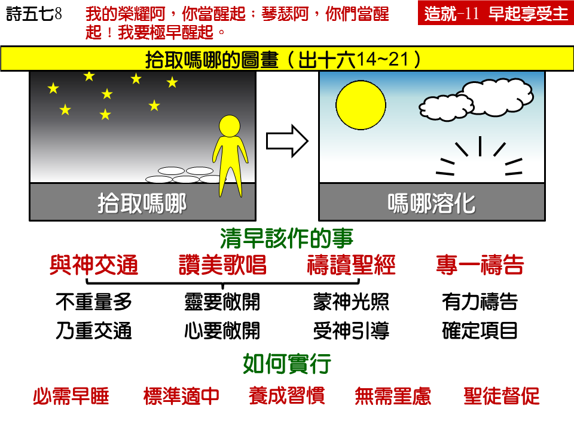

读经：雅歌七章十二节：我们清晨起来往葡萄园去，看看葡萄发芽开花没有，石榴放蕊没有；我在那里要将我的爱情给你。 诗篇五十七篇八之九节：我的荣耀阿，你当醒起；琴瑟阿，你们当醒起！我要极早醒起。主阿，我要在众民中称谢你；我要在列邦中歌颂你。
出埃及记十六章二十一节：他们每日早晨，按各人的食量收取；日头一发热，就融化了。
壹 清早是最好的时间——出十六14~21，箴二六14。
贰 清早起来的榜样——可一35，路六 13：
一 旧约：亚伯拉罕、雅各、摩西、约书亚、基甸、哈拿、撒母耳、大卫、约伯。
二 新约：马利亚、使徒们、主耶稣。
叁 清早该作的事：
一 与神交通——歌七12。
二 赞美歌唱——诗五七9，一0 八2~3。
三 读祷圣经——出十六21。
四 专一祷告——诗六三1，七八34。
肆 清早起来的实行：
一 若要早起要早睡。
二 起床标准要适中。
三 长期养成新习惯。
四 无需挂虑睡不够。
五 年长圣徒同帮助。
信息选读：
清早是最好的时间
为什么基督徒应当清早起来？因为清早是遇见主、与主有来往、与主有交通最好的时候。吗哪总是在日出以前收取的。人要吃神给他的粮食，总应当清早起来。日头一出来，吗哪溶化了，就吃不到了。你在神面前要得着属灵的培养，要得着属灵的造就，要有属灵的交通，有分属灵的粮食，就得早一点起来。起迟了就吃不到吗哪。
有好些神的儿女过着一种病态的生活，并不是因为他们有什么别的属灵的难处，就是因为他们起得太迟。有许多神的儿女，奉献也好，热心也好，爱心也好，就是因为他们起得太迟，就活不出基督徒正常的生活。你不要以为这是小事情，与灵性没有关系；实在非常有关系。有许多人，就是因为起得迟，灵性就不行。有许多人，花了许多年，基督徒作不好，就是因为起得太迟。我们没有认识一个会祷告的人是迟起来的，我们没有认识一个与神交通亲密的人是迟起来的。所有认识神的人，都经常的在清早起来，到神面前去交通。
清早该作的事
我们不是清早起来就算了，乃是要有属灵的学习，有属灵的内容。在这里题起几件事，是在清早特别要作的。
与神交通
交通的意思就是我们的灵向着神开起来，思想也开起来，让神给我们光，让神给我们话，让神给我们印象，让神摸着我们。我们的心向着神去，也让神往我们的心来。我们要清早起来在神面前安静，在神面前默想，在神面前受引导，在神面前得印象，让神有机会对我们说话，学习去摸着神。
赞美和歌唱
在清早的时候要有赞美歌颂的声音。唱歌的声音最好的时候，是在清早。清早是赞美的时候，清早是向神歌颂最好的时候。将我们最高的赞美向神送出去的时候，是我们的灵能够爬得最高的时候。
读圣经
清早也是我们吃吗哪的时候（吗哪是指着基督说的。）什么叫作吃吗哪？就是每天早起，在那里享受基督，也就是享受神的话，享受神的道。我们吃了它才有力量在旷野里行走。收吗哪的时候，是在清晨。如果你把早起的时候花在别的事情上，你就在属灵方面得不着饱足，得不着喂养。
在早晨，不是要读很长很长的圣经，乃是在神面前把圣经打开，仔细的读一段圣经，把你与神的交通和读圣经调在一起，把你的唱诗和读圣经也调在一起。这并不是说，第一步是交通，第二步是赞美，第三步是读圣经；这乃是说，要把这些事在神面前调在一起作，同时可以加上祷告。你到神面前去，将神的话打开，你在那里 把神的话读了，当你感觉罪的时候，你可以认罪，当你觉得神在这句圣经所说的事情上恩待了你，你可以感谢。你也可以在圣经所说的那一件事情上祈求神，说，“主，这一个真是我所缺的。这一段、这一节、这一句的话，真是我所缺的。主，求你赐给我。”
祷告
清早在神面前要有交通、赞美、吃吗哪，也要有祷告。前面所题到的祷告是调和着作的，这里是专一的去祷告。等到你交通过了，赞美过了，吗哪吃过了，最后，你能够有力量再把所有的事在神面前好好的祷告。祷告的确需要力量。你要在清晨亲近神，先吃一顿饱，然后留下半个钟点或者一刻钟，来为着几件要紧的事、为着你自己、为着召会、为着世人祷告。当然，在下午或晚上，还可以作祷告的工作；不过清早的时候，能够用你新得着的力量，刚刚与主交通吃了吗哪所得着的力量，花在祷告上，你就能得着更大的帮助。
所以，每一个信主的人，总应当在清早的时候把这四件事─与神交通、赞美、读经和祷告─在神面前好好的作。一个人清早的时候，在神面前有没有这样作，必定会从他那一天的生活里显明出来。从前，有一个很有名的音乐家曾说过，他如果一天没有练习，他自己会觉得他不行；如果两天没有练习，他的朋友会觉得他不行，如果三天没有练习，听众都会觉得他不行。练习音乐如此，早起属灵的学习更是如此，你只要有一天早晨在神面前没有弄好，你自己知道，有学习的人与你一接触也会知道，因为你没有摸着那一个属灵的源头。初信的人，从起头就得严严的约束自己，每天清早起来，在神面前要有这些学习。
清早起来的实行
所有要清早起来的人，都得有一个习惯，晚上要早一点睡。你如果盼望晚上迟睡，早上早起，好像蜡烛两头烧，那是不行的。
早起的标准不要定得太高。我们不提倡走极端的路，所以标准不要定得过高。到底你这一个人，按照身体的需要和环境的情形，最好是什么时候起来才算合式，你应当在神面前好好的考虑过，再规定一个标准，然后好好的遵守那个时间。
人需要有一个相当长的时间，才能养成一个新的习惯。所以起头的时候，总要勉强的起来。当你的习惯还没有养成之前，你要求神施恩，叫你有这一个习惯。作一次，再作一次，再多作一次，天天都割爱割席的爬起来，结果你就能够自然而然的清早起来。你必须养成这一个习惯，在神面前享受清晨交通的恩典。
可以说，清早起来是信徒习惯中的第一个习惯。有的人作信徒许多年，从来没有享受过清早起来的祝福，从来没有享受过清早起来的恩典，那是非常可惜的事。我们要得着这个恩典，就得好好的学。如果许多弟兄姊妹一同来学，许多人能够清早起来，召会就能够进步。一个弟兄多得着光，整个召会就亮。只要每一个人多得着一点光，天天多得着一点，整个召会就丰富了（摘自初信造就第十一篇）
课程复习：
一 信主的人，每天应当什么时候起床呢？
二 我们基督徒在清晨该作哪些事？
三 我们如何能吃吗哪？
四 要能清早起来需要哪些的实行？
